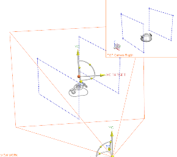

定义第一个摄像机
-
右击部件导航器中的摄像机节点并选择创建。
将出现摄像机对话框，并且视图将变为摄像机舞台视图。
-
在视图中右击并选择定向视图→正等测视图。

默认情况下，舞台视图中的模型使用静态线框渲染样式进行渲染，当只显示对象中的边几何体时，将会在更改视图时减少重新生成模型所需要的时间。
显示在图形窗口的右上角的结果视图显示的是摄像机将看到的视图。
-
在摄像机对话框中，确保类型是设置为透视。
-
在名称组中，将摄像机名称更改为 front_upper_right。
-
在目标组中，清除锁定摄像位置复选框，然后点击指定目标方位
 。
。使用未锁定的摄像位置，可以根据指定的目标移动。
-
在点对话框的输出坐标组中，从参考列表里选择 WCS。
-
将 XC、YC、ZC 都设置为0，然后点击确定。
这些值将把目标点指定为工作坐标系的原点。